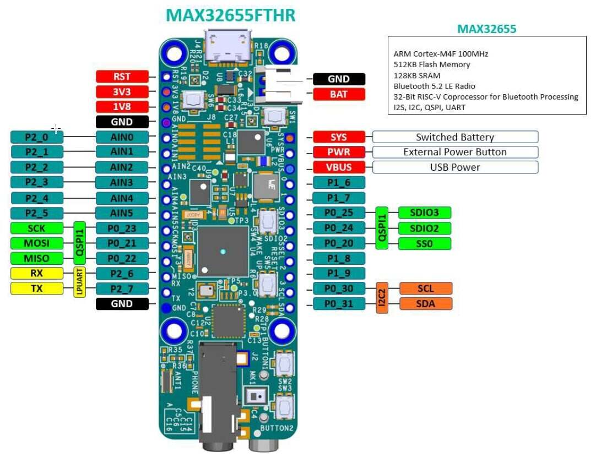
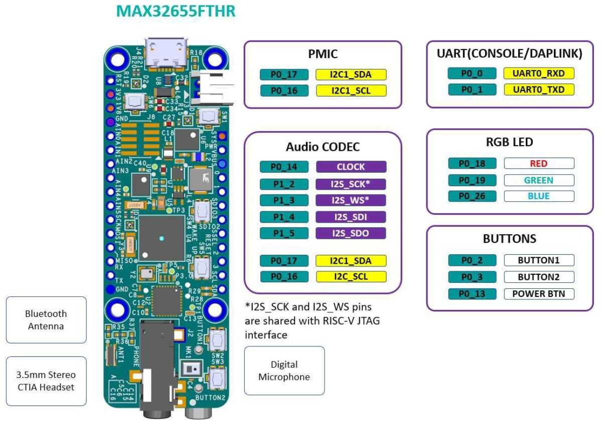

MAX32655FTHR
概述
MAX32655FTHR 是一个快速开发平台，可帮助工程师使用 MAX32655 Arm© Cortex®-M4F 和 Bluetooth® 5.2 低功耗（LE）快速实现超低功耗无线解决方案。该开发板还包含用于电池和电源管理的 MAX20303 PMIC。其外形为 0.9in x 2.6in 的小型双排排针封装，兼容 Adafruit Feather Wing 外设扩展板。开发板包含多种外设，例如数字麦克风、低功耗立体声音频编解码器（CODEC）、128MB QSPI Flash、micro SD 卡连接器、RGB 指示 LED 和按键。MAX32655FTHR 提供了一个功耗优化的灵活平台，便于快速进行概念验证和早期软件开发，从而缩短上市时间。请访问 https://www.analog.com/MAX32655FTHR 开始使用该开发板进行开发。
Zephyr 移植运行在 MAX32655 MCU 上。



硬件
MAX32655 MCU:
- 超低功耗无线微控制器
内部 100MHz 振荡器
灵活的低功耗模式，可选 7.3728MHz 系统时钟
512KB Flash 和 128KB SRAM（其中一个 32KB SRAM bank 可选 ECC）
16KB 指令缓存
- 蓝牙 5.2 LE 射频
专用的超低功耗 32 位 RISC-V 协处理器，用于分担对时序要求严格的蓝牙处理任务
提供完全开源的蓝牙 5.2 协议栈
支持 AoA、AoD、LE Audio 和 Mesh
高吞吐量（2Mbps）模式
远距离（125kbps 和 500kbps）模式
接收灵敏度：-97.5dBm；发射功率：+4.5dBm
单端天线连接（50Ω）
- 电源管理最大限度延长电池寿命
2.0V 至 3.6V 电源电压范围
集成 SIMO 电源稳压器
动态电压调节（DVS）
3.0V 下工作电流 23.8μA/MHz
3.0V 下 32KB 保持电流 4.4μA
低功耗模式下可选择保留 SRAM 并保持 RTC 运行
- 用于系统控制的多种外设
最多两个高速 SPI 主/从接口
最多三个高速 I2C 主/从接口（3.4Mbps）
最多四个 UART，一个 I2S 主/从接口
最多 8 输入的 10 位 Sigma-Delta ADC，7.8ksps
最多四个微功耗比较器
定时器：最多两个/四个 32 位定时器、两个低功耗定时器、两个看门狗定时器
1-Wire® 主机
最多四个脉冲序列（PWM）引擎
带唤醒定时器的 RTC
最多 52 个 GPIO
- 安全性与完整性
支持安全启动
TRNG 种子发生器
AES 128/192/256 硬件加速引擎
连接到 MAX32655FTHR 的外部设备：
立体声音频编解码器接口
数字麦克风
PMIC 和电池充电器
一个 128Mb QSPI Flash
Micro SD 卡接口
RGB LEDs
按键
支持的功能
max32655fthr 开发板支持下列硬件功能。
说明
The list of supported hardware features was not generated. Run a full documentation build for the required metadata to be available.
LEDs
MAX32655FTHR 开发板上有三个 RGB LED
LED1 (D1)
连接到 MAX32655FTHR 的 GPIO 端口。此 LED 可由用户固件控制。Port 0.18：红色 Port 0.19：绿色 Port 0.26：蓝色
LED2 (D2)
连接到 MAX20303 PMIC 的 LEDx 输出。这些 LED 可以通过 I2C 命令控制，也可以通过 I2C 命令配置为充电状态指示灯。
LED3 (D3)
DAPLink 适配器 MAX32625 状态 LED。由 DAPLink 适配器控制，不能用作用户 LED。
编程与调试
说明
The list of supported runners was not generated. Run a full documentation build for the required metadata to be available.
烧录
板上的 MAX32625 微控制器出厂时已烧录 DAPLink 固件，可以通过 USB 调试和烧录 MAX32655 Arm 内核。
将 USB 线缆连接到主机后，只需运行 west flash 命令即可将固件镜像写入 Flash。要执行全片擦除，请在执行 west flash 时传入 --erase 选项。
调试
请参阅 Flashing 一节，并将 west flash 命令替换为 west debug。
RV32 RISC-V 内核
MAX32655 SoC 的第二个 RV32（RISC-V）内核通过 max32655fthr/max32655/rv32 开发板限定符提供支持。默认情况下，该内核使用 Feather TX/RX 引脚作为控制台。Hello World for multiple board targets using Sysbuild 应用程序提供了使用 sysbuild 为两个内核构建的示例。目前，要正确烧录两个内核，需要使用 jlink 运行器（runner）并连接 JLink 编程器。
# From the root of the zephyr repository
west build -b max32655fthr/max32655/m4 samples/sysbuild/hello_world
west flash --runner jlink